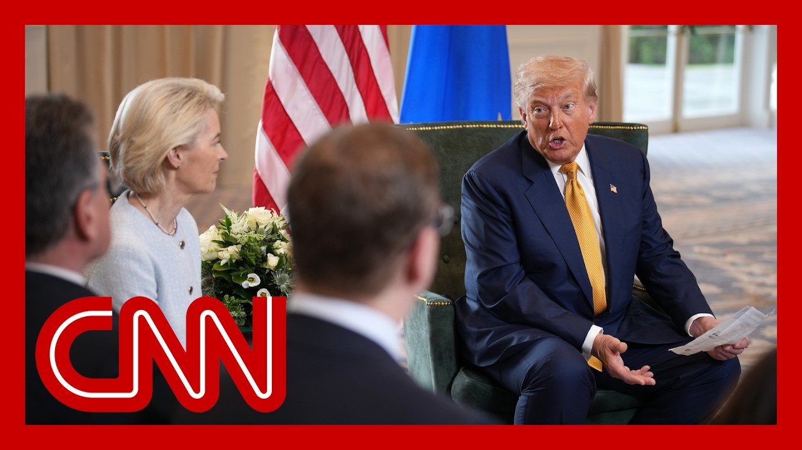

【CNN News 20250728 特朗普宣布美国欧盟达成贸易协议框架】
Summary: President Trump announced a US-EU trade deal framework covering military equipment, energy purchases, and US investments.
摘要： 特朗普总统宣布美欧达成贸易协议框架，涉及军事装备、能源采购及对美投资。

⏱️ Estimated Reading Time: 25 min.
📚 四级生词 📚 六级生词 📚 雅思生词 📚 托福生词 📚 专八生词 📚 SAT生词 📚 考研生词 📚 GRE生词 📚 高考生词 📚 其它生词
President Donald Trump announcing just moments ago that the United States and the European Union reached a framework for a trade deal after his talks with European Commission President Ursula von der Leyen at his Turnberry golf club in Scotland.
美国总统唐纳德·特朗普刚刚宣布，在与欧盟委员会主席乌尔苏拉·冯德莱恩在其苏格兰坦伯利高尔夫俱乐部会谈后，美欧达成了贸易协议框架。
Let's listen in on that.
让我们听听具体内容。
But for the most part it was closed.
但大部分内容此前未公开。
And now it's open.
现在协议已公开。
It's open for companies to go in and do a good job with it.
企业可参与其中并开展业务。
I think you'll like them.
我想你们会喜欢这些条款。
I think you'll like it and we will.
我认为你们会满意，我们也是。
Very importantly, they'll be investing a lot of money.
非常重要的是，他们将投入大量资金。
But the military is a big number.
但军事领域金额庞大。
But that's one number we're not determining.
不过具体数字尚未确定。
It's going to be whatever it is, but they're going to be purchasing, hundreds of billions of dollars worth of military equipment.
无论最终数字如何，他们将采购价值数千亿美元的军事装备。
they're very important.
这非常重要。
They're going to purchase 750, $750 billion worth of energy.
他们将购买价值7500亿美元的能源。
So that's going to be great.
这将非常利好。
And $600 billion worth of investments into the United States over and above what they have.
此外还将向美国追加6000亿美元投资。
So and I think that basically concludes the deal.
我认为这基本构成了协议主体。
I mean, those are the main factors.
这些是核心内容。
I don't think there are too many other factors other than we're going to get along great.
此外双方将保持良好关系。
And we have a great relationship now with NATO, which is largely the same.
我们与北约关系良好，基本维持现状。
I mean, not exactly, but pretty pretty close, right?
虽非完全一致，但非常接近。
Largely.
大体如此。
And with NATO, as you know, they're going up to 5% from three from 2%.
北约国防开支将从2%升至5%。
And the relationship is very strong with NATO.
我们与北约关系稳固。
so I just want to congratulate you.
我要祝贺各位。
I think it's, I think it's great that we made a deal today instead of playing games and maybe not making a deal at all.
很高兴我们今天达成协议而非空谈。
I think it's, I'm going to let you say I.
我想请你也谈谈。
But I think it's the biggest deal ever made.
这是史上最大规模的协议。
Thank you very much.
非常感谢。
Yeah. Thank you.
是的，谢谢。
We have a deal.
我们达成了协议。
we have a trade deal between the two largest economies in the world, and it's a big deal.
这是全球两大经济体间的重大贸易协议。
It's a huge deal.
意义非凡。
it will bring stability.
它将带来稳定。
It will bring predictability.
提供可预期性。
That's very important to for our businesses on both sides of the Atlantic.
这对大西洋两岸企业至关重要。
it's 15% tariffs across the board, all inclusive, inclusive.
全面实施15%关税，涵盖所有领域。
The investments.
包括投资。
Mr. President just described that going to go to the United States and the purchases over there.
总统提到的对美投资与采购。
Indeed.
确实如此。
basically the European market is open.
欧洲市场基本开放。
It's 450 million people.
覆盖4.5亿人口。
so it's a good deal.
这是份好协议。
Yeah. Was tough negotiations.
谈判过程艰难。
I knew it at the beginning and it was indeed very tough.
我早有预料，实际非常艰难。
But we came to a good conclusion.
但我们取得了圆满结果。
We did.
确实如此。
So again, congratulations and many things.
再次祝贺各位。
Thank you. Thank you.
谢谢。
If you have any questions please.
如有问题请提问。
How did you come to a deal so quickly that you're making a comeback?
为何能如此迅速达成协议？
I think we both wanted to make a deal.
因为双方都有诚意。
you know, you said something that is very important.
你提到关键一点。
It's going to bring us closer together.
这将拉近双方关系。
I think this deal will bring us very close together, actually.
我认为协议将极大促进双边关系。
Sort of, it's a partnership in a sense.
可以说是种伙伴关系。
But, it's a very good point, and it's something that's very important.
这个观点很重要。
But was there one issue that that we need to get rid of one.
是否有某个争议点需解决？
No. We had 4 or 5.
不，有四五个议题。
No, no, not not pharmaceuticals.
不包括医药领域。
I mean, we're going to be a lot of companies are coming into the U.S. and that's unrelated to this deal.
许多企业将进入美国，但这与协议无关。
But it's, I think we, you know, this is didn't just start today.
谈判并非始于今日。
We at, a meeting, I wasn't sure I said 5050.
会谈时我曾不确定能否五五分成。
I think you probably felt the same thing, but this started months ago.
你们可能也有同感，但数月前就已启动。
This negotiation.
这次谈判。
So we knew pretty much what we were getting into.
我们对内容基本清楚。
And we were able to make a deal that's very satisfactory to both sides.
最终达成令双方满意的协议。
So it's very it's, it's a tremendously it's a very powerful deal.
这是份极其有力的协议。
It's a very big deal.
规模空前。
It's the biggest of all the deals.
是史上最大协议。
It will be the biggest of all the deal.
将是所有协议中最大的。
So we're very honored to have done so.
我们深感荣幸。
And your staff has been fantastic.
双方团队表现卓越。
And they work together very long and hard.
他们长期辛勤合作。
They worked hard and long.
付出巨大努力。
And many thanks to the teams on both sides.
感谢双方团队。
there was, as I said at the beginning, a heavy lifting you had to do.
如我所说，你们承担了重任。
many thanks also for the talks.
也感谢多次会谈。
We had many times.
我们多次沟通。
Yeah. On the way to our goal, and we made it.
最终实现了目标。
And that's good. That's good.
这很好。
Anybody else?
还有其他问题吗？
Yes, ma'am.
请提问。
Question for the EU Commission president.
请问欧盟委员会主席。
what what are the US concessions?
美方做出了哪些让步？
What is the US giving up.
美国放弃了什么？
In the deal.
在协议中。
So as we the starting point was an imbalance, a surplus on our side and a deficit on the US side.
最初存在贸易不平衡：我方顺差，美方逆差。
And we wanted to rebalance the trade relation, and we wanted to do it in a way that trade goes on between the two of us across the Atlantic, because the two biggest economies should have a good trade flow to us.
我们希望通过重新平衡贸易关系，维持跨大西洋贸易，因为两大经济体需要良好贸易流动。
And we I think we hit exactly the point.
我们准确达成了目标。
We wanted to find rebalance but enable trade on both sides, which means good jobs on both sides of the Atlantic means prosperity And that was important for us.
在再平衡同时促进双边贸易，为大西洋两岸创造就业与繁荣。
And again, the energy is a very important component because we have, more energy than anybody else in that sense.
能源是重要组成部分，因美国能源资源丰富。
And, I think it was very wise that they buy a lot of energy and it's, it's great stuff and it solves a lot of problems.
欧盟大量采购能源是明智之举，能解决诸多问题。
So that was a it was a great decision, I think.
我认为这是英明决定。
well, let's see, one of the things one, what you, still is saying the way it is, the steel and aluminum, etc., etc. that's a worldwide thing that stays the way it is.
钢铁铝制品等全球性条款维持现状。
We have.
我们...
To up as far as your next steps.
关于后续步骤。
Chip says, Howard, you might want to describe the chips please if you would well, the expectation is in two weeks time, we're going to come out with our, our chips.
芯片方面，预计两周内我们将公布方案。
232 and, and that was one of the key reasons that the European Union came to talk to the president to try to resolve all things at one time.
这是欧盟与总统会谈的关键原因，希望一次性解决问题。
And, well, I'll let you wait for the two weeks until you get to announce your plan.
具体计划两周后公布。
But, we are going to be bringing chip manufacturing back to the United States of America.
我们将把芯片制造迁回美国。
We'll be doing a lot of chips.
大幅增产芯片。
A lot of companies are coming in from Taiwan and from other places into the U.S., and they're doing that in order to avoid tariffs.
许多企业正从台湾等地迁往美国以避免关税。
And, the president really, avoided the tariffs in a, in a better way for them.
总统以更优方式帮助他们规避关税。
Much better way, much more conclusive.
更有效更彻底。
probably much more profitable, definitely much more profitable and got a lot of benefit from it.
利润更高，获益良多。
So this is a very interesting negotiation.
这是场精彩的谈判。
Was it.
确实如此。
It was I think it's going to be great for both both parties.
对双方都极有利。
It's I really I think you I think you're various countries are very happy about this.
各国都会满意。
Is there an industry in us that you see having the first impact of getting into this market that was not accessible before that sort of what's what's the first call you mean?
哪个美国行业将最先受益？
Yeah, I think cars, cars basically were not invited.
汽车业此前受限。
We're not I don't know if the word is not allowed or just, you just kept them out somehow.
不知是明令禁止还是隐性壁垒。
Right?
对吧？
But, cars will be, you know, we have some cars that do terrific business and very.
但美国汽车表现优异。
We do really well with the pickup trucks, with the SUVs.
皮卡和SUV销量很好。
we do, we have some great things.
我们有优势产品。
And I think the people of Europe will have some diversification.
欧洲消费者将获得更多选择。
that will make them happy.
这会让他们满意。
so I think maybe cars would be the one that would go the biggest, and the second would be agriculture.
汽车业受益最大，其次是农业。
The farmers.
农民群体。
And we'll do it in very strict conjunction with, with the president and the European Union.
我们将与总统和欧盟紧密协作。
And they're coming into likewise, they're coming into our country with, great vigor.
欧盟产品也将积极进入美国。
I think they're going to I think they're going to make a lot of money with this.
双方都将获利丰厚。
I think everybody is I think it and again, it's going to bring a lot of unity and friendship.
这将增进团结与友谊。
It's going to work out really well.
效果会非常好。
Okay. Got to keep your focus on say it.
请继续提问。
What's the next deal your focus on now?
下一步谈判重点是什么？
It's an interesting question.
这是个好问题。
This is the big one.
当前协议已是重中之重。
This is the biggest of them all.
是最大规模的。
we're looking at deals with 3 or 4 other countries, but for the most part, I can't get them to understand that is the letter we just sent, that letter and that letters, very universal for most.
我们正与三四国谈判，但多数尚未理解我们刚发送的通用信函内容。
I mean, most you wouldn't be able to do this.
普通人难以完成此类谈判。
You alone.
单枪匹马。
You wouldn't have the time or the patience to be able to do a deal like this.
既无时间也缺耐心。
most of the others are going to be a certain tariff, and we're going to keep it as low as we can.
与其他国家的关税将尽可能低。
the generally smaller countries, or countries we don't do much business with, but that they've already received to a large extent, they've received a letter.
较小或贸易量少的国家已收到信函。
They'll probably, receive a letter of clarification or a confirmation type letter, which will go out sometime during this week prior to August 1st, and the tariffs will start being paid by those countries prior to August, you know, on August 1st and beyond.
本周将发出澄清或确认函，相关国家8月1日起支付关税。
Okay. Mr. President, as part of the rush to get this deal done.
总统先生，促成此协议是否...
So, you know, Jeffrey Epstein story.
与杰弗里·爱泼斯坦事件有关？
you got to be kidding with us right now.
现在提这个太荒谬。
Had nothing to do with it.
毫无关联。
Only you would think that that had nothing to do with it, which is.
只有你会这么想。
Good for European business, American business businesses in.
协议利好欧美企业。
This country, these small businesses are.
本国小企业...
Closed.
此前受限。
Right? Cool.
对吧？
Right. And the same thing happens tomorrow.
明天同样如此。
This time.
这次。
What we need to do to help British business in this.
我们需助力英国企业。
I think everybody's going to be happy with this.
各方都会满意。
the Prime Minister of the UK, while he's not involved in this, will be very happy because he, there's a certain unity that has been brought there to, we have a separate deal with them.
英国首相虽未参与，但会因我们与其单独协议及促成的团结而高兴。
But I think everybody's going to he's going to be very happy to know.
大家都会欣喜。
Look, he's friendly with all of you.
他与各位关系良好。
He's a I think he's a very good a very good man.
是位杰出领袖。
And, he's going to be very happy to see what we did.
对我们的成果会非常满意。
I think UK is going to be very, very happy.
英国将极为欣喜。
Thank you all very much.
非常感谢各位。
Appreciate it.
感激不尽。
Thank you for watching this.
感谢观看。
Thank you guys.
谢谢大家。
I have the spirit.
我充满干劲。
So am essentially not something we can think of.
这超出我们预期。
Thank you.
谢谢。
Thanks guys for the.
感谢...
Like.
支持。
This.
这一切。
What?
什么？
Well, we continue to cover our breaking news.
我们将继续报道这则突发新闻。
A major trade deal struck with the European Union.
美欧达成重大贸易协议。
Just moments ago, the president emerged from a high stake trade meeting with the EU leaders and announced that the two sides have reached the framework for this trade deal.
总统刚结束与欧盟领导人的重要会谈，宣布双方达成协议框架。
It comes just days before Trump's massive 30% tariffs were set to kick into place for European imports if a deal wasn't reached.
此前若未达成协议，特朗普将对欧洲进口商品征收30%关税。
CNN's Jeff Zeleny joins us now from Scotland.
CNN记者杰夫·泽莱尼在苏格兰连线。
And, Jeff, we heard the president say that the deal with the European Union was, quote, the biggest deal he's ever made.
总统称这是"史上最大协议"。
What more can you tell us about it and the speed in which it was secured?
请介绍协议内容及快速达成的原因？
Look, the bottom line is a transatlantic trade war has been averted.
关键是大西洋两岸避免了贸易战。
The EU is the largest trading partner of the United States.
欧盟是美国最大贸易伙伴。
The stakes were quite high going into this meeting, but the deal was also nearly done going into this meeting.
会谈风险极高，但协议已基本成型。
That clearly was about an hour long meeting or so, and you clearly don't work out all these details in an hour long meeting.
约一小时的会谈无法敲定所有细节。
So this was designed to be announced at the Trump Turnberry golf resort here in Scotland.
选择在特朗普坦伯利高尔夫度假村宣布具有象征意义。
But it is significant all the same.
但依然意义重大。
It's a 15% across the board.
全面征收15%关税。
A tariffs on autos on other goods.
涵盖汽车等商品。
Pharmaceuticals are not included in this.
医药产品除外。
And that is a big part of the the imports into the US from a European company.
而这正是美国从欧洲公司进口的重要组成部分。
So very significant.
因此意义重大。
The EU also countries also agreeing to to purchase U.S. military equipment, also agreeing to purchase some supplies of energy and other goods.
欧盟国家还同意购买美国军事装备，并采购部分能源和其他商品。
so this effectively is more a higher rate than the EU was paying before.
因此，这实际上比欧盟之前支付的税率更高。
but it is a lower rate than the threat of 30%, tariffs.
但低于此前威胁的30%关税。
So now we are finally, after six months of this administration starting to see some of these deals come in to shape.
因此，在这届政府上任六个月后，我们终于看到部分协议成形。
Japan, was last week and now this EU deal very significant as well with 15%, levies across the board.
日本协议是上周达成的，而如今这份欧盟协议同样重要，全面征收15%关税。
but look, the threat of those higher tariffs has worked in this case.
但显然，更高关税的威胁在此事上奏效了。
And the EU agreed to that 15% margin.
欧盟同意了15%的关税幅度。
So we saw the president there meeting of the European Commission, Ursula von der Leyen, here, and a warm relationship, which they have not always had.
我们看到总统在此会见了欧盟委员会主席乌尔苏拉·冯德莱恩，双方关系融洽，而这并非一贯如此。
But clearly it was a deal that President Trump wanted to announce here and make here in Scotland.
但显然，这是特朗普总统希望在苏格兰宣布并敲定的协议。
And speaking on that, Jeff, how big of a political windfall was this for the president to secure this deal?
谈到这一点，杰夫，总统达成这份协议对他的政治利益有多大？
Well, look, I think it's just one more example of the trade, policy that he has implemented.
我认为这只是他实施的贸易政策的又一例证。
and if the EU had not agreed, well, then the 30%, tariffs would have gone into effect.
如果欧盟未同意，30%的关税就会生效。
So a political win in terms of, getting a headline and seizing a deal, which is a very important deal, we should point out 15%, tariffs across the board, some European companies.
因此，这是一场政治胜利——既登上头条又达成重要协议。需指出的是，15%的全面关税针对部分欧洲公司。
And and again, this is just happening in real time here.
此事正在实时发生。
So we'll have to wait and see the reaction.
我们需等待并观察反应。
it's higher than many companies in countries would have liked.
这比许多国家的公司所期望的更高。
But again, it, avoids the threat of that 30%, tariffs.
但它避免了30%关税的威胁。
So this is, certainly a political win for, the, the US president.
因此，这无疑是美国总统的政治胜利。
There's no doubt about that.
这一点毋庸置疑。
But as we learn more about the specifics of the detail of the deal, will be able to, add some meat to the bones, if you will.
但随着我们了解更多协议细节，就能充实其框架。
But clearly, and some companies and others are scrambling to sort of figure out what the actual, tenants of the deal are, but announced there at the Trump, golf resort.
但显然，部分公司正急于弄清协议的实际条款，而协议是在特朗普高尔夫度假村宣布的。
on a Sunday afternoon.
在一个周日下午。
And this meeting was not actually scheduled to be on the president's agenda, at least publicly, but it was added to it because the officials clearly knew that they were close to reaching a deal.
此次会议原本未列入总统的公开议程，但因官员们清楚协议即将达成而临时添加。
And, look, the incentives were very clear for the EU to, try and reach this because that 30%, threat of a tariff, should that have gone into effect on Friday, that would have been devastating for so many businesses here.
对欧盟而言，达成协议的动机非常明确——若30%关税于周五生效，将对许多企业造成毁灭性打击。
And what do you think a deal like this means for tariff negotiations with other countries?
你认为此类协议对其他国家的关税谈判意味着什么？
Are they watching this and thinking, I better fall in line?
他们是否正观望并考虑顺从？
That is a very good point.
这是个很好的观点。
I mean, Japan, first and foremost.
日本首当其冲。
Now this, the UK also has reached a deal.
如今英国也已达成协议。
So again, a little more than six months on into this Trump administration, the, tariff policy has been one of the, more interesting factors of this presidency.
特朗普政府上任六个多月以来，关税政策一直是其执政中较引人注目的因素之一。
It has not roiled the markets in a long term way, as many predicted it would.
它并未如许多人预测的那样长期扰乱市场。
prices have gone up because, of course, a tariff is a tax that is passed on to, the consumer in most respects, but it has not shaken the financial markets, as much as many analysts and critics thought it would.
价格上涨是因关税本质上转嫁给消费者，但金融市场并未如许多分析人士和批评者预期的那样受冲击。
So.
因此。
But it definitely does send a message to other countries to, step in line and try and make a deal, get a better deal than, the threat coming from the Trump administration, which again, was, for some 30%.
但它确实向其他国家传递了信号：顺从并争取比特朗普政府威胁的30%关税更优惠的协议。
But there's really been a wave of uncertainty across, businesses, really around the world in terms of this on again, off again, tariff and trade policy.
但这种反复无常的关税和贸易政策已给全球企业带来不确定性浪潮。
So it adds a bit of certainty to that.
因此协议增添了些许确定性。
But again, it's a 15% a tariff, which is, more significantly more than that was paid a previously to this, but again, not as much war as would have happened if they had not reached this, this agreement here today is about.
但15%的关税仍显著高于此前水平，不过若未达成今日协议，后果会更严重。
And what is on the president's agenda, especially as we look forward to this meeting he has tomorrow with Keir Starmer.
总统的议程还包括明日与基尔·斯塔默的会晤。
And does this the speed of this deal, the success of this deal for the president, do you think that elevates his confidence as he deals with these leaders?
此次协议迅速达成且成功，是否提升了总统与这些领导人打交道时的信心？
Well, look, I mean the the meeting that's scheduled to take place tomorrow and into Tuesday morning with British Prime Minister Keir Starmer is about is about far more than a trade.
明日持续至周二早晨与英国首相基尔·斯塔默的会晤远不止关乎贸易。
the UK, U.S trade deal has largely been already inked, but, global challenges of first and foremost Gaza, the humanitarian crisis, happening there, that is a leading, topic of discussion at that, bilateral meeting tomorrow, as well as the ongoing war, with Ukraine and Russia.
英美贸易协议已基本敲定，但首要议题是加沙人道主义危机及持续的俄乌战争。
the the British prime minister has been heartened by, the US president's recent, tough talk, if you will, in tough language against Vladimir Putin.
英国首相对美国总统近期对普京的强硬表态感到振奋。
He has given him, a number of weeks to, essentially come to the negotiating table.
总统已给予普京数周时间回到谈判桌。
We'll see if that happens.
我们拭目以待。
But, this is sort of separate and apart from, the meeting that is scheduled to place tomorrow.
但这与明日会晤是两回事。
This entire a trip, it's, the president's, President Trump's, fifth international trip, and certainly, one of the more interesting ones in the sense that it was largely set up as a golf trip to start out, the main agenda item initially, the white House described this as a private visit, and his main agenda was to open a golf course on, Tuesday.
此行是特朗普总统的第五次国际访问，最初被白宫描述为以周二开设高尔夫球场为主的私人行程。
That's in that's, named in honor of his mother, who, of course, is from Scotland.
球场以其苏格兰裔母亲的名字命名。
But along the way, of course.
但行程中——
So whenever the US president is on European soil, leaders, of course, are eager to meet with him.
美国总统踏上欧洲土地时，领导人自然渴望会晤。
So this trade deal was important.
因此这份贸易协议很重要。
But tomorrow, the meeting with, the British prime Minister also so many, issues to discuss.
但明日与英国首相的会晤还将涉及诸多议题。
And of course, this just sets the table for the official state visit when President Trump comes back in September to meet with King Charles in a ceremonial visit in the UK, is about.
这也为特朗普总统九月正式访英会见查尔斯国王的国事访问奠定基础。
To have some money.
获得一些资金。
Thank you so much for your analysis.
非常感谢您的分析。
We appreciate it and we'll be right back after this brief break.
感谢收看，广告后继续。
We'll have more on this breaking news.
我们将带来更多突发新闻。
You're watching CNN newsroom.
您正在收看CNN新闻室。